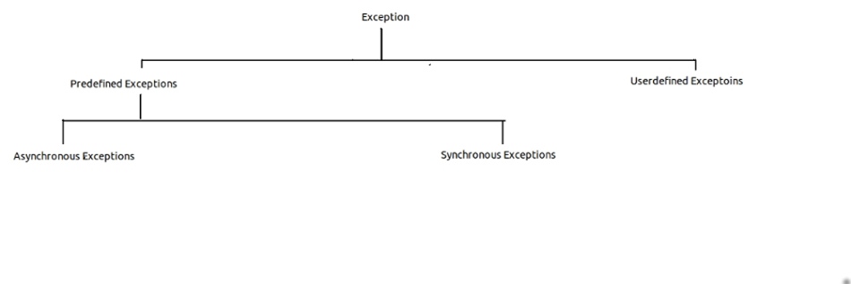
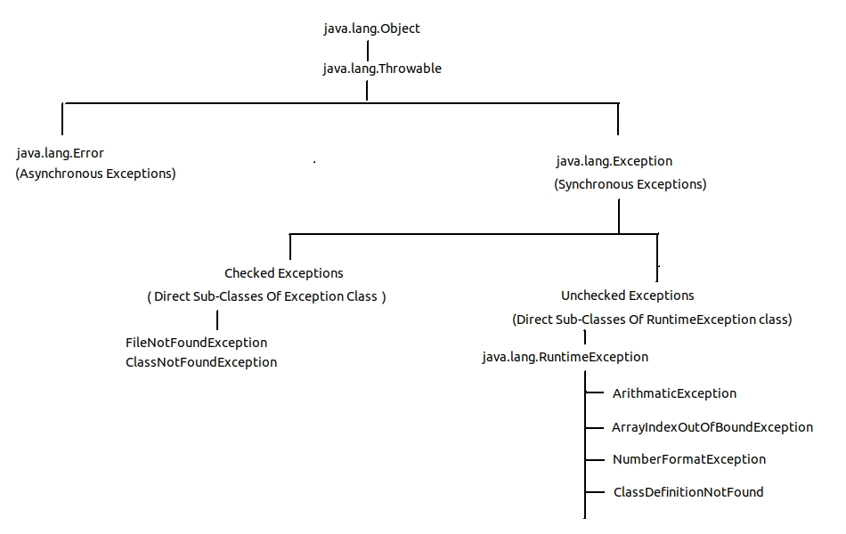
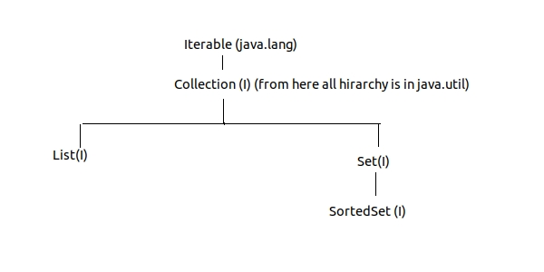
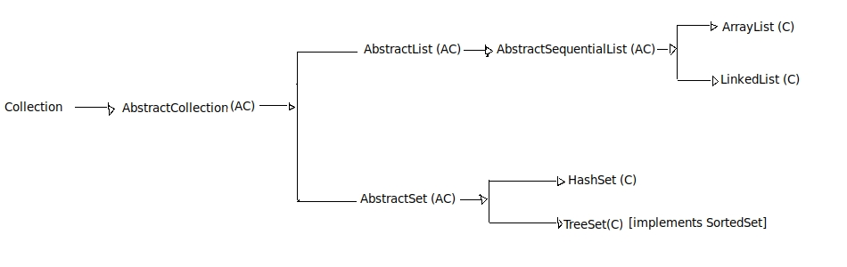
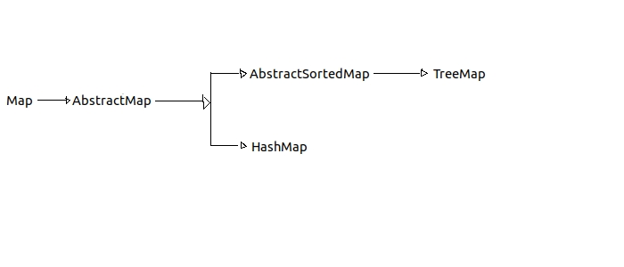
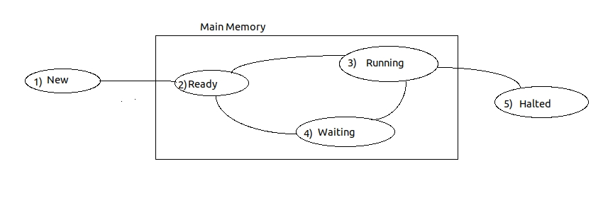
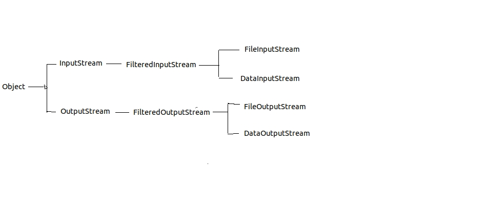
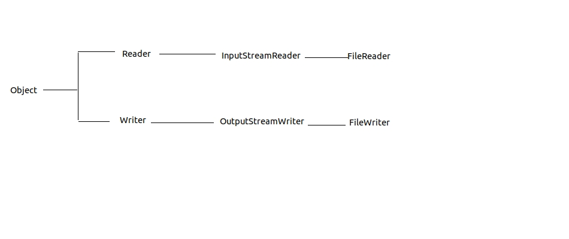

Tutorial Campus....!
Core Java
Q) What is difference bertween URL & URI
ans :- the place where application is running is known as URL &
the place where application resides is known as URI
|------------- ABC.java---> abc.class ---> |jvm (jit) | -----------------------> O.S. (byte code) |------------- (interpretation to native understanding form of o.s.)
Q) Define JIT.
ans> JIT is set of programs developed by sum ms. & added as part of JVM to
speedup the INTERPRETATION phase. it reads byte code and converts to native understanding form of o.s.
---> Exception handeling capability makes java robust.
other languages like c,c++ are having more chances of crashing due to errors.
Q) What are the differences between HTTP & FTP
| HTTP | FTP |
|---|---|
| it is one of the TCP protocol | it is one of the UDP protocol |
| it is one of the stateless protocol | it is one of the stateful protocol. |
| it is one of the acknowledgement oriented protocol. | FTP is non acknowledgement oriented protocol. |
Q) What are the differences between instance methods & Static methods.
| Instance Methods | Static Methods |
|---|---|
| are recommended to perform repeated operations such as reading records from db. | are recommended to perform
one time operations such as opening a file either in read mode or write mode.or opening a db connection |
| result of instance methods is not shareble among objects. | result of static methods is always sharable among objects. |
| instance methods are also known as object level methods | static methods are also known as class level methods |
Static & instance method calling consequences.
1) One Static method can call other staic method directly provided both the methods belong to same class.
2) One instance method can call oehter instance method directly provided both the methods belongs to same class.
3) One static method can call other instance method w.r.t. object i.e. without considering wether they belong to same class or not.
4) One instance method can call other static method w.r.t. class Name . i.e. without considering wether they belong to same class or different calss.
Converting String to fundamental Data
in general syntax is :- public satic XXX parseXXX(String);
| Datatype | Wrapper Class | Conversion Method from string to fundamental data |
|---|---|---|
| byte | Byte | public static byte parseByte(Sting) |
| short | Short | public static short parseShort(Sting) |
| int | Integer | public static int parseInt(Sting) |
| float | Float | public static float parseFloat(String) |
| long | Long | public static long parseLong(Sting) |
| double | Double | public static double parseDouble(Sting) |
| char | Character | public static char parseChar(Sting) |
| boolean | Boolean | public static boolean parseBoolean(Sting) |
Q)Define Wrapper class. what is purpose of Wrapper class
For each and every datatype there exist a predefined class. this predefined class is
known as wrapper class.
purpose of wraper class is to convert string data into fundamental data.
Constructors
Def:- A Constructor is a special member method which is called by the JVM Automatically
when the object is created for placing our own
values without placing default values. (basic purpose of constructor is to initialize object.)
Advantages/Properties of Constructors..
- Constructors will be called automatically whenever an object is created.
- The Constructor name must be simmiler to classname.
- Constructor should not be static because constructors will be
called each and every time as and when we create object. - Java doesen't contain static constructors.
- Constructors are not inherited from one class to another class as every
constructor if the class is used for initializing it's own data members. - Constructor can be private provided an object of one class
cannot be created in the context of some other class . but it can be created in context of same class. - Whenever we create an object only with default constructor (e.g. new ClassName()) ,
defining the default constructor is optional.
if we define our own default constructor then JVM will execute programmer defined
default constructor. if we are not defining our own default constructor,
then JVM will call it's own constructor called system defined default constructor and it is
used for placing default values. - Whenever we create any object with parameterized constructor , defining the parameterised
constructor is mandatory. - Whenever we create multiple objects of any class w.r.t. default and parameterised constructors, it is mandatory to define both the Constructors
To View Profile of a Class/Interface
--->javap className/InterfaceName
this will show the profile of class . i.e. member variables and member method signatures will be listed.
'this' keyword & this(...)
This is a keyword / implicit object created by JVM and supplied in every java proram for 2 purposes.
1) It is pointing to current class object or it contains an addres of current class object. 2) Whenever the formal parameter and datamember of class are simmileer ,
there is possibility that JVM get ambituity. in order to differentiate between
formal parameters and data members of class, the data members of the class must be preceeded by a keyword 'this'.
3) 'this' cannot be used in static methods/context.
4) 'this(..)' is used to call establish communication between constructors. this(..) should be the first statement while making call to other constructors.
e.g.
public class TestClass {
int a,b,c;
public TestClass()
{
System.out.println("Executing Default Constructor...!");
}
public TestClass(int x)
{
this();
this.c=x;
}
public TestClass(int a,int b)
{
this(a+b);
this.a=a;
this.b=b;
//this(a+b); // C.E. :- Constructor call must be the first statement in a constructor
}
public static void main(String[] args) {
TestClass tc=new TestClass(10,20);
System.out.println("Value of C is "+tc.c);
}
}
Q) Define factory method and Singleton class? explain purpose of factory method. A Factory method is one whose return type must be simmileer to class name. factory method can be instance method or static method. Singleton Class is one of the java class whose object existance will be allwed only once per JVM.
Inheritance
The process of getting the data members and methods of one class into another class is known as inheritance.- in java multople inheritance is not supported. single, multilevel & Hirarchial inheritance is supported. i.e. one class can extend only one class.
- 'extends' is the keyword used for inheriting the features of base class to the derived class.
- when we create an object of bottom most derived class, first we get memory space for the top most base class data memberslater we get memory space for intermediate base classes and at last for the bottom most derived class datamembers.
- for each and every class in java there exist an implicit predefined superclass called java.lang.Object.
- Constructors of base class will not be inherited into the derived class.
in general constructors will not participate in inheritance. - if we dont want to give some of the features of the base class to derived class then those features must be made as private. i.e. private data members and methods will not beparticipate in inheritance.
'super' Keyword
'super' keyword help us in differentiating difference between datamembers of base class and datamembers of derived class. super keyword can be used at variable level, method level & at constructor level.
1) at variable level :-
e.g. :- (inside some method of derived class.)
this.a=x;
super.a=y;
this.a + super.a
2) method level (in main method.)
Dc dc=new Dc();
dc.display(); //it will call derived class display method.
//to call super class display method we need to specify as below
//in derived class dispaly method.
public class DC extends BC
{
...
pv display()
{
super.display(); //this will call BC display() method.
}
}
Note :- there is no way to call super class orignal method from the context of main(). w.r.t. derived class object.
3) constructor level. super()/super(..)
super()/super(..) is used to call the constructor of base class. it should be the first statement in the constructor of derived class while making call to base class constructor.
Constructors calling sequence is from bottom to top i.e. from derived to base they are executed in top to bottomi.e. from base class constructor to derived class constructor.
Method overriding :- in method overriding we redefine body of the method and keep method Heading same.
Abstract Classes
- Concreate Classes are those which contains all the defined methods. Abstract Class is one which may contain zero or more abstract methods.
- not defined means there is just method heading. & body is not defined for that method. such methods needs to be declared as abstract. and if there is at least one abstract method in the class then it is that class should be declared as abstract class with 'abstract ' keyword.
- we cannot create object of a abstract class directly with new ClassName(); abstract classes are ment for inheriting so that implementation class/ subclass of abstract class should implement all the unimplemented methods . if subclass of abstract class is also not implementing unimplemented methods then it should also be declared as abstract class.
- all the reusable methods should be placed in abstract class so that class extending from abstract class can get those methods and reuse them.
- abstract class should always participate in inheritance hence it should not be made as final.
- example of abstract class is GenericServlet class.
- it is highly recommended to override abstract/null body methods as method body overriding cost could be much more than creating new body while overriding.
Interfaces
Syntax for defining an interface
public interface interfaceName
{
public static final variableNames & initializations.
//e.g. pulblic static final int a=10;
abstract ... mehtod declarations;
}
- One of the limitation of Abstract class is , we cannot achieve multiple inheritance w.r.t. Abstract Class.
- Interfaces are useful for developing userdefined datatypes.
- 'Interface' keyword used to create interface.
interfaces are nothing but collection of public static final variables
(i.e. variables should be initialized.) and abstract methods. - we cannot create object of interface directly. interface should be implemented by another class & then we can create object of that class.
- interfaces are by default abstract . no need to specify abstract against interface explicitly.
- one class can extend only one class but one class can implement many interfaces.
- class and interface extending & implementing consequences are as follows
- class extends class
- class implements interface
- interface extends interface
Packages
Syntax for defining a package :- package packagename1.subpackagename2.subsubpackagename3....Syntax for compiling package is :- javac -d /locatoin_where_package_to_be_placed filename.java
- package statement should be the first statement of any java program.
- generally package name should be like org/com . domainname/companyName . applicationName/ModuleName . subpackageName.
- For a class to be placed in package , modifier of class & methods and constructors inside should be public
- class/interface within a package could be reffered by using import statements or by using fully qualified name of class/interface .
- if base class or interface lies within same package then there is no need to import or use fully qualified name in context of derived class.
Access Specifiers/Modifiers
There are 4 access specifiers in java 1) private 2) default 3) protected 4) public- private access apecifier is also known as native access apecifier
- default access apecifier is also known as package access apecifier
- protected access specifier is also known as inherited access specifier
- public access specifier is also known as universal access specifier.
Same Package Base Class = S.P.B.C.
Same Package Derived Class= S.P.D.C.
Same Package Independent Class= S.P.I.C.
Other Package Derived Class = O.P.D.C.
Other Package Independent Class = O.P.I.C.
| classes | S.P.B.C | S.P.D.C. | S.P.I.C. | O.P.D.C. | O.P.I.C. |
|---|---|---|---|---|---|
| specifiers | |||||
| private | true | false | false | false | false |
| default | true | true | true | false | false |
| protected | true | true | true | true | false |
| public | true | true | true | true | true |
Exception Handeling
In Java we have 2 type of Exceptions 1) Predefined Exceptions. 2) Userdefined Exceptions. Predefined Exceptions are classified in 2 types- Asynchronous Exceptions
-> These are Exception which deals with hardwareproblems and external problems.
like memory problem/ hardware problems/power failure.
->These Exceptions are direct Sub classes of Error Class.
-> e.g. StackOverFlowException - Synchronous Exceptions
-> These are Exceptions which deals with programatic runtime errors.
-> These Exceptions are direct sub classes of Exception Class.
-> e.g. ClassNotFoundException
- Checked Exceptions
-> These are direct sub classes of Exception Class.
-> These exceptions occur during harddisc checking.
-> e.g. FileNotFoundException, ClassNotFoundException, IOException - Unchecked Exceptions
-> These are direct sub classes of RuntimeException Class.
-> These exceptions occur during main memory checking/ processing .
-> e.g. ArithmaticException,NumberFormatException,DivideByZeroException, ArrayIndexOutOfBoundsException etc
Exception Handeling Hirarchy

Exception classes

Exception Occurence Internal Flow
- if user enters valid inputs , java program will execute successfully. and execution terminates normally
- if user enters invalid input , java program cannot proceed hence. JVM contacts JRE to get Exception Subclass
- JRE further contacts Throwable class to get type of exception occured & passes message back to JRE. JRE further contacts Java Exception API to get Appropriate Exception Subclass. i.e. JRE checks if exception is of Error or Exception or RuntimeException etc.
- JRE gives Appropriate Exception Subclass to JVM & JVM creates object of that exception subclass. with error message and cause for that exception.
Exception Handeling
it is highly recommended to java prrogrammer to convert system generated error messages to userfriendly error messages. this process is called as Exception Handeling. Exception Handeling could be achieved with help of following keywords.- try :-
- It is one of the block in which we write the block of statements which causes problems at runtime
- one try block can contain at least one catch block. and it can have multiple catch blocks.
- each try block must be followed by a catch block
- catch:-
- this block executes automatically whenever exception occurs.
- we can supress the system generated error message & provide userfriendly error message in catch block.
- finally :- this block executes compulsarily even if exception is not occuring.
so it can be used for resource cleanup operations like closing db connection & file & closing streams. - throws:- we need to declare throws keyword
at the method heading while writing method defination .
so that calling method can handel exceptions in try-catch block - throw:- to throw exception this keyword is used.
| throw | throws |
|---|---|
| throw is kyword which is always used for hitting or raising exception | throws is keyword which gives an indication to calling function to keep called function within try and catch block |
| throw is used within method bode | throws is used within method heading |
| if we are using throw keyword then using throws is mandatory for that mehtod in heading. | if we are using throws keyword then it is not mandatory to use throw keyword in method body |
Collection Framework
Collection framework is one of the standardised mechanism of java which allows us to integrate or group different types of elements or simmiler type of elements or both of them in single variable.for questions please reffer :-
javahungry-collection question answers.

Below are few methods of Collection interface. which will be available in rest of the derived interfaces.
- public int size()
- public boolean isEmpty()
- public boolean add(Object obj)
- public Object[] toArray() :- this method will return array of Objects
- public Iterator iterator() :- this will return iterator interface object. to iterate through the collectoin variable. it has hasNext() & next() methods.
- public Object first()
- public Object last()
- public List headList(begining_upto_target_object)
- public List tailList(from_target_till-last-object)
- public List subList(Object from,Object to)
- public void add(int,object)
- public Object get(int)
- public void removeAll()
- public ListIterator listIterator() :- this method will return listIterator interface object. it is subinterface of Iterator interface. which is also having hasPrevious(), previous() mehtods. i.e. using ListIterator we can iterate in both forward and backword direction.
- public Object first()
- public Object last()
- public SortedSet headSet(object) --> list will be returned upto specified object.
- pubilc SortedSet tailSet(object) ---> list will be returned from specified object till end.
- public SortedSet subSet(obj_from,obj_to)
AC:- stands for Abstract class.
C:- stands for Concrete class AbstractCollection(AC)

LinkedList
- LinkedList stores data in form of nodes. i.e. node contains data/object in first half and second half contains address to next element.
- LinkedList can be useful in cases where elements are to be added or removed at begining or at end or at specific position.
- LinkedList are consuming more memory as these requires memore to strore address of next element. retrival operations with linkedList is more.
ArrayList :- it consumes less memory space than linkedlist. retriving elements from ArrayList takes negligible amount of time. Profile of ArrayListProfile of Linked List Constructors 1) LinkedList() 2) LinkedList(int size) instance methods public void addFirst(object) public void addLast(object) public Object removeFirst() public Object removeLast() public Object getFirst() public Object getLast() along with these ofcourse Collection interface methods are also present . :)
-
Constructors
- 1) ArrayList() :- bydefault arraylist will increment it's size by half of elements added.
- 2) ArrayList(int size) :- it will create arraylist of specified size.
- 3) ArrayList(int size,increment_ratio) :-
with help of this constructor we can specify the ratio in which size of arraylist should be incremented. i.e. consider new ArrayList(4,2)) when 4 elements are added to ArrayList then it's size will be incremented by 2 this way we can optimize performance of ArrayList.
| HashSet | TreeSet |
|---|---|
| HashSet internally uses HashMap | TreeSet internally uses TreeMap |
| Order of storing and retriving of elements from HashSet cannot be determined. it uses hashing mechanism | TreeSet displays data always in sorted order. it uses red-black algorithm to store elements. |
In 2D collection framework , we can store data in key->value pair. in key-> value pair both should be of object type. following are the 2D collection framework interfaces 1) java.util.Map 2) java.util.Map.Entry 3) java.util.SortedMap Map interface methods are as follows
- public int size()
- public void put (object_key , object_value)
- public object get(Object_key)
- public Set entrySet() :- this method will return Set object of Map.Entry . Entry object contains key & value.
- public Set keySet() :- this method will return Set object of all the keys.
- public Object getKey()
- public Object getValue()
- public Objct first()
- public Object last()
- public SortedMap HeadMap(upto_target_object)
- public SortedMap tailMap(from_taret_object)
- public SortedMap subMap(obj_from , obj_to)

HashMap & TreeMap are implementation Classes of 2D collection framework.
| HashMap | TreeMap |
|---|---|
| HashMap stores elements with hashing mechanism i.e. we cannot determine the order of elements to be stored in HashMap. |
HashTable stores elements in sorted order. |
| HashMap allows one key as a null and multiple null objects as values. |
TreeMap never allows null values eiter as key or value. |
Legacy Collection Framework.
- Early days of SUN MICROSYSTEMS Legacy Collection Framework was known as Datastructures.
- they reeinginered datastructures and formed New Collection Framework as we discussed above.
- legacy collection framework contains following interfaces and classes.
- legacy collection framework variables are by default thread safe / synchronized. becuase in early days they used to run on standalone system. i.e. on non threadsafe environment. new collection framework can be used in threadsafe environments. i.e. under server's control which is by default threadsafe environment.
1D legacy Collection Framework :
Below are classes of 1d legacy collection framework
Enumeration(I):-
- Enumeration is predefined interface used for extracting the data from legacy collection framework.
- it points just before first element of collection framework variable.
- it has following methods
- public boolean hasMoreElements()
- public Object nextElement()
it is same to ArrayList.
---> Constructors of Vector are as follows
- Vector() : - default size of vector is 10 cells.
- Vector(int size)
- Vector(in size, increment_ratio)
---> methods of Vector are as follows.
- public void addElement(Object)
- public void addElement(Object , int)
- public Object removeElementAt(int)
- public void removeElement(Object)
- public void setElementAt(int, Object)
- public int size()
- public Enumeration elments()
- public int capacity()
Stack (C)
- stack is extended class of Vectodr class.
- basic working principle of stack is LIFO (Last In First Out)
- Constructors of Stack 1) Stack()
- methods of Stack
- public oolean empty()
- public void push(Object) :- inserts element in stack at top.
- public Object pop() :- removes element form stack i.e. topmost element
- public Object peek() :- to obtain topmost element.
- public int search(Object) :- if element is found in stack then it will return index of element in that stack .
2D legacy Collection Framework :
Dictionary (AC)
- it is Abstract class. so it is playing role to give comman methods to it's implementation classes.
- Methods of Dictionary class are as follows.
- public int size()
- public void put(object,object)
- public void remove(Object)
- public void removeAll()
- public Enumeration keys()
- public Object get(Object)
- it extends Dictionary class.
- it organises data in Key--Value pair
- following are constructors of HashTable
- HashTable()
- HashTable(int size)
- HashTable(int size, float fillratio)
fillratio is used as formula :- size=size +[size * fillratio]
note here size* fillratio will return ceiling value
i.e. eg. size= 4+ [4 * 0.25] i.e. size= 4+[1]
- properties files are maintaining data in key-value pair.
- these are also known as resource bundle files.
- properties file extension could be .properties or .vbf
- Properties p= new Properties(new FileInputStream(XXX.properties)) p.getProperty(stno);
| HashTable | HashMap |
|---|---|
| it is synchronized | it is nonsynchronized |
| it will not allow null key & value | it will allow one key as null & multiple values could be null. |
MultiThreading
Thread :- flow of control is known as thread. or path of execution is known as thread.- Basic aim of multithreading is to achieve concurrent execution.
- any java program is containing multiple flow of controls then the java program in known as multithreaded program.
- wih multithreaded modeling languages we can achieve both concurent execution and sequential execution.
- in java we have following API for developing multithreaded application.
- 1) javalang.Thread (C)
- 2) java.lang.Runnable (I)
- By default there exist single background thread & single foreground thread.
- Whenever we execute a java program, the logic of the java program will be executed by one of the thread known as foreground thread.
- and to monitor the status of foreground thread, one more thread is internally created known as background thread.
- so in java program at any point of time two types of threads are executing . hence every java program is multithreaded.
Q)What are the differences between program and process.
| program | process |
|---|---|
| set of optimized instruction is known as program. | a program under execution is known as process |
| programs reside in secondary memory. | process always resides in main memory. |
| program is blueprint of process. | process is program in execution. so there could be multiple process of program. |
States of thread.
there are 5 types of states as below.

- new :- when thread is created . at that time it's state is new. and it is about to enter in main memory.
- ready :- ready state is one in which thread is entered into main memory. address space is created for the thread methods first time and it's waiting for the CPU.
- running :- a running state is one in which thread is under control of CPU. i.e. it is being processed.
- waiting :- a thread is said to be in waiting state if and only if
the thread will satisfy anyone of the following factors.
- for the ramaining cpu burst time (the amount of time required by thread form cpu for it's complete execution is known as CPU burst time.)
- making currently executing thread to sleep by specifying the amount of sleep time in miliseconds.
- making the currently executing thread to suspend .
- making the thread to wait by specifying the waiting time
- making thread to wait without specifying the wait time.
- joining the threads which are completed their execution
- halted :- when thread completes it's execution then it will go in halted state.
No. of ways to create a thread in java
---> after creating thread object , we would need to implement run(){...business logic..}--->There are two ways to create a thread.
- by using java.lang.Thread (C)
- by using java.lang.Runnable (I)
1) by using java.lang.Thread (C)
- by using new operator Thread t=new Thread()
- by using factory method Thread t=Thread.currentThread()
- by using object of class which is derived from Thread class.
1) by using java.lang.Runnable (I)
- note that start() method is not there in Runnable inerface. it's there in Thread class.
- in this way we have to implement Runnable interface in our class and define run() method. after that we need to pass that class object to Thread(Runnable object) constructor to create a thread..
- benifit of doing this will be , we will be able to call start() method form Thread class which internally calls run method. this will start execution of thread. so thread will be started..
- if we are not creating object of Thread class with Runnable interface implementation class object and try to call run() method from there then we are just calling run method to run normally. and in this way thread will not be created.
Thread class profile
Datamembers- public static final int MAX_PRIORITY (10)
- public static final int MIN_PRIORITY (1)
- public static final int NORM_PRIORITY (5)
- Thread() :- this will create thread with default name Thread-0 , Thread-1 ...Thread-n
- Thread(String) - this will create thread with specified name.
- Thread(Runnable object)
- public final void setName(String)
- public final String getName(String)
- public final void setPriority(int)
- public final int getPriority()
- public final boolean isAlive() :- this will return 'true' if thread is in ready , running, waiting states. and 'false' will be returned if thread is in new & halted state.
- public final void start() :- this method is used to bring Thread from new to ready state. this method internally calls run() method.
- public void run() :- this method in Thread class is having null body . so it is recommended to write our own class by extending form Thread class. and implement business logic in run()
- public final void suspend :-
by calling this method we move thread from running to waiting state.
temporary execution results will be stored in Process Control Block - public final void resume :- by calling this method we move thread from waiting to ready state.
- public final void stop() :- this method is used for terminating or closing the execution of thread.
- public final void join() throws InterruptedException :- it can be used after execution of thread is complete. this is used to join the thread to it's Threadgroup so that garbage collector could collect all threads from Threadgroup at once. so garbage collector will be called only once insted of calling for each thread individually.
- public static final Thread currentThread()
- public static inal void sleep(long miliseconds) throws InterruptedException
File Handeling
File ClassConstructors
- File file=new File("NameAndLocation");
- File file= new File(String path,String name)
- boolean exists()
- boolean isDirectory()
- boolean isFile()
- boolean canRead()
- boolean canWrite()
- long length()
- long lastModified()
On Files we perform below operations.
1) Write operation / OutputStream operation.
2) Read operation / InputStream operation.
- While writing to files if disc is full or file is readonly then we may get IoException.
- While reading from files if file is corrupt then we can get IoException.. file is not existing then we get FileNotFoundException.
- FileNotFoundException is subclass of IoException. both these exceptions are checked exceptions.
i.e. we need to add try-catch block or throw them while using these objects.
- Byte Streams
- Characer Streams.
- by using byte streams, data will be written byte by byte. i.e. 1 byte at a time.
- byte stream classes can be used to read and write primitive datatypes.

FileInputStream :-
- this can be used to read file byte by byte.
- -1 will represent end of file.
- Constructors are as follows :-
- FileInputStream fis=new FileInputStream(String fileNameAndLocation)
- FileInputStream fis=new FileInputStream(File f) / new FileInputStream(new File("name_and_location"));
- methods are as follows.
- public int read(); :- will return ascii code for each character. .
- public int read(byte[] b);
- public void close(); :- to close the opened file in read mode.
- FileInputStream can be used with help of DataInputStream to read pimitive datatypes.
FileInputStream fis=new FileInputStream("/home/suraj/Desktop/json_messsage");
DataInputStream dis=new DataInputStream(fis);
XXX = dis.readXXX() :- here XXX represents
this class can be used to write file byte by byte.
-
Constructors are as follows.
- FileOutputStream(String fileNameAndLocation)
- FileOutputStream(String fnameAndLocation , boolean flag )
:- here if boolean flag is 'true' then file will be appended.
otherwise if flag is false then it will rewrite file.
-
few methods of FileOutputStream are
- write(byte[] b);
- write(int);
- public void close();
-
FileOutputStream can be used with help of DataOutputSteam to write primitive datatype variables.
FileOutputStream fos=new FileOutputStream("filename_and_location"); DataOutputStream dos=new DataOutputStream(fos); dos.writeXXX();
- as shown like above we can use this class to read primitive data.
- also we can attach it to other input streams. like keyboard. DataInputStream dis=new DataInputStream(System.in) //attached to system keyboard i.e. standard input method.
- it has readLine() method. so that we can read line by line.
- as shown like above we can use this class to write primitive data.
- it has constructor DataOutputStream(OutputStream)
- it can write data line by line . it has writeLine(String) method.
Character streams are those which will transfer 2 bytes of data at a time.

FileReader
- FileReader class is used to read data byte by byte. it is same as FileInputStream.
- constructors
- FileReader(File file)
- FileReader(String fname)
- BufferedReader(Reader ...)
- BufferedReader(Reader rd, int size)
- FileWriter(File file)
- FileWriter(String fname)
- BufferedWriter(Writer wrt)
- BufferedWriter(Writer wrt, int size)
Serialization and Deserialization
- When we want to write object to file, we can achieve it by using Serialization techniques.
- to make an object serializable we need to implement that class by Serializable interface.
- transient variables will not participate in serialization process.
- Serializable is an marker interface. i.e. it is not containing any method.
class Student implements Serializable
{
int rollNo;
String name;
String address;
}
class MySerializationTest
{
Student student =new Student(10,"suraj","pune");
FileInputStream fis=new FileInputStream(new File("/home/suraj/Desktop/testFile"));
ObjectInputStream ois=new ObjectInputStream(fis);
ois.writeObject(student);
FileOutputStream fos=new FileOutputStream(new File("/home/suraj/Desktop/testFile"));
ObjectOutputStream oos=new ObjectOutputStream(fos);
oos.writeObject(student);
}
Network Programming
With help of socket programms we can develop the Intranet applications.
to create a client :-
Socket socket=new Socket(String hostname, port)
DataOutputStream dos= new DataOutputStream(socket.getOutputStream());
dos.writeInt(data);
to create a server :-
ServerSocket ss =new ServerSocket(int port_no);
while(true) //to open continious connection
{
Socket s= ss.accept();
DataInputStream dis=new DataInputStream(s.getInputStream());
dis.readInt();
...
....
DataOutputStream dos= new DataOutputStream(s.getOutputStream());
dos.writeInt("hello world")
....
s.close();
}